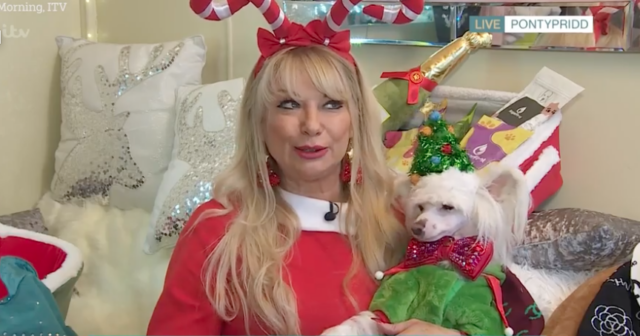
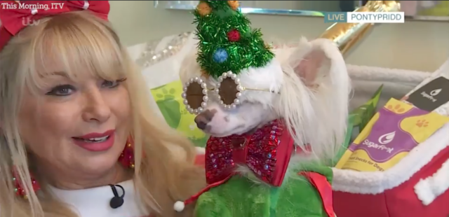
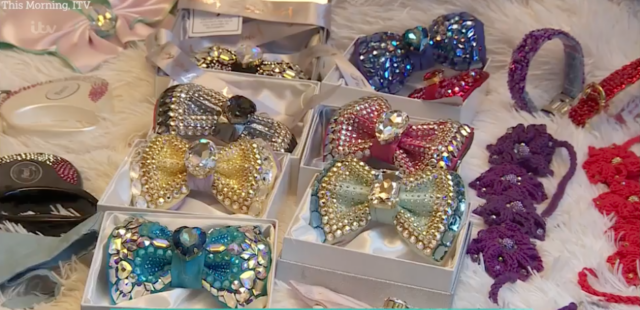
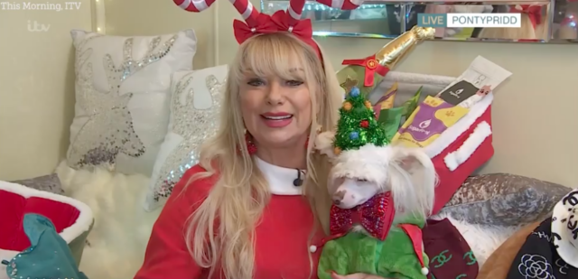

It's easy to understand why someone would want to pamper their pup and shower them with extravagant gifts. Not only are our furry family members absolutely adorable, but they offer loyalty, companionship, and unconditional love. Of course they deserve top-notch toys!
But just how many expensive gifts and accessories are too much?
Last week, a segment on the British talk show "This Morning" featured Lisa and her Chinese Crested Powderpuff, Fabio. With him on her lap, and while the pair were both dressed in Christmas apparel, Lisa revealed just how much money she had already spent on her furry best friend this holiday season.
Everyone knows I am a big charity worker as well, I give a lot to charity. I like to spend money on my dog because I have no children,said Lisa.
Not only was the audience let in on the secret of just how much money she's spent so far, but they were also treated to footage of Fabio’s special Christmas grotto that she built especially for him. Doggie ornaments covered his own Christmas tree, and the camera pans to show his sleigh, reindeer, and many strings of colorful, blinking lights. Together they sat surrounded by his many outfits, dog beds, pillows, and accessories.
Viewers were taken aback when she stated that she had already spent £4,000 on her canine companion for Christmas. In fact, while they were being interviewed, her one-and-a-half-year-old pup was wearing a bowtie that was adorned with Swarovski crystals and cost £1.5k. Lisa shared that Fabio's Christmas gifts this year include Chanel-inspired outfits, crystal-encrusted bowties, and berets that match hers.
Lisa's holiday spending shocked viewers, but they were absolutely taken aback when she further revealed that she had spent a total of £20,000 on things for him so far this year, including his Christmas gifts.
What changed my life, my mum was diagnosed with pancreatic cancer and she had six months to live. She was well and fit and happy and all of a sudden life was snatched away from her and me. It changed my perspective on everything and from that moment on I thought you know what there is so much doom and gloom in the world and this makes me happy. I am not hurting anyone,shared Lisa. 
Reactions to the segment did include a couple of comments of appreciation for her enthusiasm, but were predominantly made of confusion and concern. Many comments called Fabio’s treatment “cruel,” and commenters were deeply concerned about him having the chance to “be a real dog.” Viewers were also quite confused about why a segment would feature someone spending so much expendable income when many families are still struggling to keep food on the table.
Featured Image: YouTube